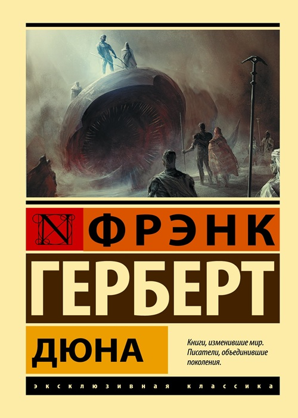
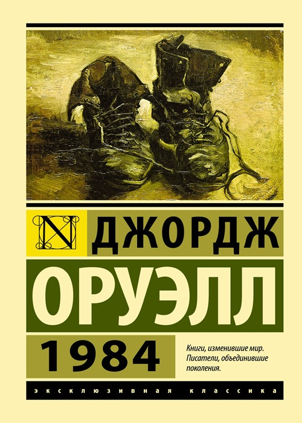
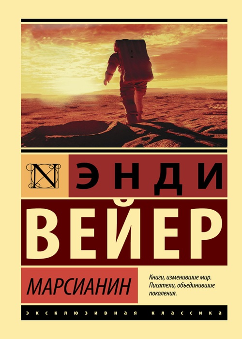
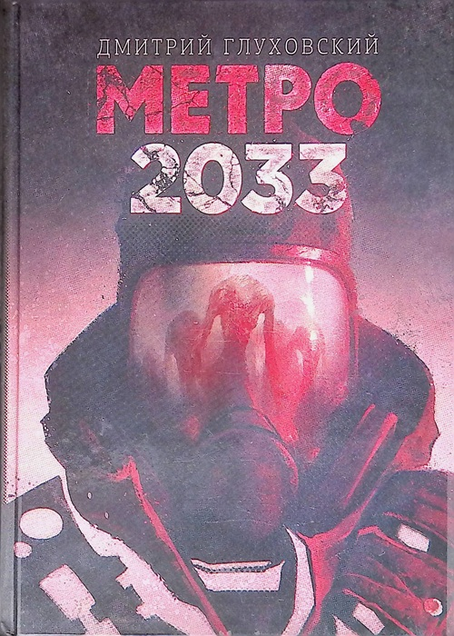

Культура и вдохновение
Любимые фильмы

1+1
Парализованный миллионер нанимает в сиделки молодого парня из пригорода, только что вышедшего из тюрьмы. Несмотря на разницу в возрасте, положении и воспитании, между ними завязывается необычная дружба, которая меняет жизнь обоих. Омар Си, сыгравший Дрисса, отлично передал характер своего героя — дерзкого, но по-своему заботливого парня, который не воспринимает инвалидность босса как трагедию. Благодаря этому фильм получился не сентиментальной драмой, а очень живой и смешной комедией, где даже серьёзные моменты обыграны с юмором.

Волк с Уолл-стрит
Фильм основан на реальной истории биржевого брокера, который погружается в мир роскоши, коррупции и излишеств. Откровенная история о том, как жажда наживы и риск могут привести к невероятному успеху и такому же громкому падению. Ди Каприо, на мой взгляд, лучший актёр современности, а в сочетании с дубляжом Сергея Бурунова его персонаж заиграл особенно ярко — та самая озвучка, которая делает фильм ещё смешнее и ближе. Быстрый ритм и чёрный юмор не дают заскучать ни на минуту, и фильм пролетает как один миг.

Зелёная книга
Фильм рассказывает реальную историю знаменитого чернокожего пианиста, который отправляется в концертный тур по югу Америки 60-х годов и нанимает водителем итальянского вышибалу. Двое совершенно разных людей вынуждены провести вместе несколько месяцев, что приводит к неожиданным последствиям для обоих. Местами смешно, местами грустно, а к концу пробивает на слезу — настолько искренне показано, как люди с разным цветом кожи, воспитанием и достатком могут найти общий язык и стать лучшими друзьями до конца жизни. Очень тёплый фильм, который хочется пересматривать.

Интерстеллар
В будущем Земля становится непригодной для жизни, и группа исследователей отправляется через червоточину в другую галактику, чтобы найти новый дом для человечества. Герои сталкиваются с парадоксами времени, новыми закономерностями на других планетах и ценой выживания. Фильм невероятно красивый и заставляет задуматься о том, как много значат для нас близкие — особенно трогает сцена, где главный герой смотрит записи повзрослевших детей, пока для него прошло всего несколько часов.

Живая сталь
В недалёком будущем боксёров заменили роботы. Бывший боксёр и его сын находят на свалке старого робота-спарринг-партнёра и решают сделать из него чемпиона. История о семье, упорстве и втором шансе. В детстве пересматривал много раз — очень крутые бои и тёплые отношения между отцом и сыном. Роботы выглядят настолько реалистично, что до сих пор кажется, будто снимали настоящие.
Книги, которые мне понравились

Дюна — Фрэнк Герберт
Обратил внимание на эту книгу после выхода фильма Дени Вильнёва. Многие говорили, что это одна из лучших научно-фантастических саг, к тому же тема космоса и политических интриг мне всегда была интересна. В книге рассказывается о противостоянии могущественных домов за контроль над пустынной планетой Арракис, где добывают важнейшее вещество во вселенной. Книга впечатлила масштабом мира, глубиной проработки культуры и экологии, а также неожиданными сюжетными поворотами.

1984 — Джордж Оруэлл
Эту книгу я решил прочитать после прохождения серии игр Beholder. Разработчики вдохновлялись именно романом Оруэлла, и мне захотелось обратиться к первоисточнику. В книге рассказывается о тоталитарном обществе, где каждый шаг отслеживается, а мысли наказуемы. Книга произвела на меня впечатление, потому что я интересуюсь антиутопиями и играми, где нужно принимать сложные решения в условиях контроля и выживания.

Марсианин — Энди Вейер
Сначала я посмотрел фильм с Мэттом Дэймоном — это один из моих любимых актёров, к тому же тема космоса меня всегда привлекала. Фильм настолько понравился, что я решил прочитать книгу. В ней рассказывается, как астронавт выживает в одиночку на Марсе, используя знания и смекалку. Книга оказалась ещё интереснее фильма — в ней больше деталей, юмора и инженерных решений. Рекомендую тем, кто увлекается космосом и технологиями.

Метро 2033 — Дмитрий Глуховский
Я прошёл одноимённую игру и только потом узнал, что она создана по мотивам книги. Мне сразу захотелось прочитать оригинал. В книге рассказывается о выживании людей в московском метро после ядерной войны. Главный герой Артём отправляется в опасное путешествие через станции, чтобы спасти свой родной дом. Книга мне понравилась своей атмосферой постапокалипсиса и глубиной мира, которая в игре раскрыта не полностью.
Любимые исполнители

СТИНТ
Российский стример из Иваново, который начал заниматься музыкой на заре своего творчества. Его треки «Игра», «Армагеддон», «Happy End» отличаются проработанной инструментальной частью и философскими текстами. А такие треки, как «Это не мой вайб», «Идиот», «Хрясь!» — драйвовые и заряжают энергией. Радует не только прямыми трансляциями, но и хорошей музыкой, под которую можно гулять вечером или гонять на симуляторе.

Дора
Российская певица из Саратова, её стиль называют «кьют-рок»: лёгкий вокал и гитарное звучание с поп-мелодиями. Мои любимые треки — это «ЁК», «Осень пьяная», «Трезво». В текстах — истории про отношения и подростковые переживания. Люблю слушать, когда хочется чего‑то лёгкого.

Linkin Park
Американская рок-группа, смесь тяжёлых гитар, электроники и вокала Честера Беннингтона. Альбомы Hybrid Theory и Meteora стали классикой, а песни «In the End», «Numb» и «Breaking the Habit» знают многие. После смерти Честера группа взяла паузу, но в 2024‑м воссоединилась с новой вокалисткой и выпустила альбом From Zero. Хорошо слушать под настроение.

Rammstein
Немецкая индустриал-метал группа, главные «огненные» рокеры планеты. Их фишка — ритмичные гитарные риффы, мощный вокал Тилля Линдеманна и театральные шоу с пиротехникой. Тексты почти все на немецком, часто мрачные и провокационные. Хиты вроде «Sonne», «Mutter», «Du hast» стали узнаваемы далеко за пределами метал-сцены. Отличный вариант, когда хочется чего‑то мощного и атмосферного.
© 2026